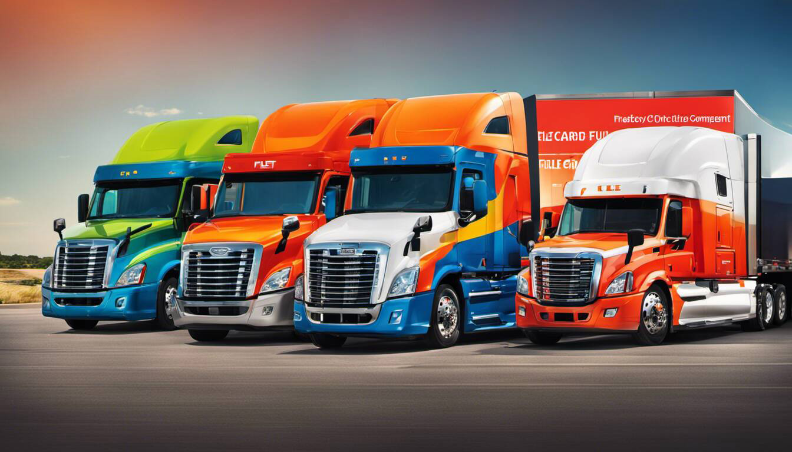

A fleet fuel card, issued by platforms like WEX, is a payment method specifically designed to control costs for fuel expenses of company vehicles, or what we may refer to as fleets. The pump at any gas station essentially becomes a controlled environment with the use of fleet fuel cards. The main purpose of a fleet card, much like other credit cards, is to ensure that money is only spent on fuel for company vehicles and not for any other purposes. Fleet cards offer customizable purchasing controls, permitting businesses to choose when, where, what, or how much the gas their drivers can buy with these credit cards. With fleet cards, businesses can track, manage, and control fuel expenses across multiple vehicles and drivers. By using a fleet fuel card, businesses can maximize savings and convenience by providing better control over fuel expenses at gas stations. WEXCard offers flexible fuel card programs that cater to your company's specific needs.

Fleet fuel cards offer numerous benefits that can help businesses maximize savings and convenience. Firstly, fleet cards provide customizable purchasing controls, allowing businesses to have a greater level of control over their fuel expenses at gas stations. This is made possible with the use of credit card technology which brings flexibility and control beyond traditional cash transactions. This means they can choose when, where, what, or how much their drivers can buy, ensuring that money is only spent on fuel for company vehicles and not for any other purposes. By setting these controls, businesses can reduce the risk of unauthorized purchases and keep a tighter rein on their overall expenses.
Secondly, fleet cards streamline the payment process by eliminating the need for cash transactions or reimbursements. Instead of drivers using their own money to pay for fuel and then seeking reimbursement, fleet cards serve as a direct payment method. This not only eliminates the hassle of tracking receipts and processing reimbursements but also improves cash flow management for businesses, similar to the advantages credit cards bring to personal finances.
Additionally, fleet cards offer wide acceptance at many preferred national and regional fuel and maintenance brands throughout the US. WEX fleet cards, in particular, are accepted at a wide range of gas stations. This ensures that businesses have access to a large network of locations where their drivers can conveniently refuel and obtain vehicle maintenance services. With a high number of locations available, companies can minimize disruptions caused by limited options or inconvenience for their drivers.
Imagine being able to track your fuel expenses with ease, set limits on how much each driver can spend per transaction or day, and know exactly where your vehicles are refueling - all with a single fleet fuel card. This credit card for your fleets provides you with peace of mind and a centralized system to manage your company's fuel expenses effectively.
One significant benefit of using fleet fuel cards is the simplified expense tracking they offer, much like utilizing a credit card. Trying to manually keep track of fuel expenses for multiple vehicles across different drivers can be a logistical nightmare. Fleet cards provide an automated solution that streamlines this process.
With fleet cards, businesses can easily monitor and analyze their fuel expenses through detailed reports provided by the card issuer. These reports can include information such as the date, time, location, and amount spent on each transaction. By having access to this data, companies can gain valuable insights into their fuel consumption patterns, identify potential areas of improvement, and make more informed decisions to optimize their overall fuel efficiency.
Furthermore, the ability to track individual driver transactions allows businesses to ensure compliance with company policies and prevent any misuse or fraudulent activities. Fleet cards, in essence, add an extra layer of security and control when it comes to fueling your fleets at gas stations.At the heart of it all, what fleet fuel cards offer is transparency and accountability, paving a clear highway to efficient operations and giving peace of mind to business owners and fleet managers. They make travel for company vehicles a breeze, even for those operating on diesel, with credit at numerous fuel stations across the nation, including car-friendly stops and bustling truckstops.
John, a fleet manager, shared his experience saying, "By using fleet fuel cards, I was able to simplify my expense tracking significantly. The detailed reports provided by the card issuer allowed me to monitor every transaction made by my drivers, whether at a diesel station or at a regular car service station. This gave me the convenience of better control over our fuel expenses within our travel route. It saved me so much time and reduced the chances of errors or discrepancies in our records."
Managing fuel expenses can be a complex task for businesses with a fleet of vehicles. However, fleet fuel cards offer enhanced cost-control measures that can help businesses maximize savings and streamline their operations. These cards provide customizable purchasing controls, allowing businesses to set limits on when, where, what, and how much their drivers can buy - be it at a diesel station on a highway or a car-friendly truckstop. By having control over fuel and travel expenses, businesses can efficiently reduce unnecessary spending and allocate resources more appropriately.
Fleet fuel cards come with a range of key features that make them valuable tools for businesses, especially those frequently using diesel. One important feature is wide acceptance at many preferred national and regional fuel and maintenance brands throughout the US. They can be used at various locations without restriction, from highway truckstops to city car service stations, providing convenience for drivers and flexibility in fueling options. Additionally, fleet fuel cards often offer discounts or credit on fuel purchases, allowing businesses to save money with every transaction.
Another key feature of fleet fuel cards is the ability to track and manage fuel expenses across multiple vehicles and drivers. With detailed reporting and analytics provided by these cards, businesses can gain insights into their fuel consumption patterns, identify opportunities for improvement, and make data-driven decisions to optimize their operations. This level of visibility and credit control not only enables better control over expenses but also helps in identifying any misuse or fraudulent activities at the station.
Furthermore, fleet fuel cards typically come with security features and authorization controls to protect against unauthorized transactions or misuse. For example, many cards require PINs or driver identification numbers for each transaction, ensuring that only authorized personnel can use the card. This reduces the risk of fraudulent activity at the truckstop or station and provides an additional layer of security for both the business and the cardholder.
As you hit the road and travel, managing fuel expenses for your fleet becomes a top priority. Security and authorization controls are of utmost importance. Fleet fuel cards offer robust security features that help businesses maintain control over their fuel purchases. These controls ensure that money is only spent on fuel for company vehicles, be it a diesel car or a station wagon, and not for any other purposes.
Implementing a fleet fuel card system, businesses can set up authorization controls to monitor and limit employee spending. This means that drivers will only be able to use the card at authorized fuel stations, including diesel stations or truckstops, preventing unauthorized purchases and potential misuse. Moreover, businesses can implement PIN codes or other security measures to further safeguard against fraud.Fuel expenses can be a significant concern, particularly for organizations that have truckers and commercial fleets constantly on the road. By having these security measures in place, companies can have peace of mind knowing that their fuel expenses are being closely monitored and controlled. They can also regularly utilize a gas station to maximize efficiency. This not only helps prevent unauthorized spending but also allows for efficient tracking and reporting of fuel costs.
One of the key benefits of using fleet fuel cards like the WEX Fleet card is the ability to set customizable spending limits and receive fuel discounts. This feature allows businesses like commercial driving companies to tailor their fuel card program according to their specific needs and budget.
With customizable spending limits, businesses can determine how much their truckers can spend on fuel within a given time period. For example, a business may set a daily or weekly spending limit per driver or per vehicle. This enables better control over expenses and prevents excessive or unnecessary fuel purchases. Furthermore, prompt payments ensure that their WEX Fleet card holds a consistent balance to continue acquiring these benefits.
The needs of truckers vary depending on the length and nature of their routes. Let's say a company has a fleet of delivery vehicles that typically cover short distances within a city. They may choose to set lower daily spending limits for these vehicles compared to those used for long-haul trips. This ensures that each trucker is allocated an appropriate amount of funds based on their specific requirements.
Customizable spending limits also allow businesses to adjust budgets according to fluctuations in fuel prices or changes in operational needs. For instance, during periods of high fuel prices, a company may temporarily decrease spending limits to manage costs more effectively. Rebates can further enhance these savings by offsetting a portion of the overall spend.
When it comes to managing fuel expenses for a fleet, choosing the right fuel card can make all the difference. Here are two of the top fleet fuel cards that can help maximize savings:
The Comdata Fleet Fuel Card is renowned for its comprehensive coverage and attractive savings plan. With acceptance at over 16,000 fueling locations across the country, it provides fleet owners with access to a wide network of locations to fuel up their vehicles conveniently. The card also offers robust reporting capabilities, allowing fleet managers to analyze and track their drivers' spending habits and fuel efficiency. By identifying areas for improvement, fleet owners can strategically optimize their operations and reduce overall costs.
Moreover, the Comdata Fleet Fuel Card offers various discounts and benefits aimed at increasing savings. These benefits, much like fuel discounts, may include volume rebates, negotiated prices with specific fuel stations, and access to special promotions or deals. Companies and even individual truckers can use these features for cost-effective solutions that ultimately contribute to maximizing their savings.
For instance, imagine a delivery service company with a large fleet of vehicles that cover extensive distances daily. By utilizing the Comdata Fleet Fuel Card's network coverage and negotiating advantageous pricing with participating stations, this company could potentially save a significant amount of money on their fuel expenses annually.
By selecting a fuel card like the Comdata Fleet Fuel Card, fleet owners can align themselves with a provider that understands their unique needs and offers customized solutions to maximize savings. However, it's worth noting that different fleet fuel cards have their own set of features and benefits tailored to various requirements. It's essential for fleet owners, especially those running commercial operations, to consider these options thoroughly before making a decision.
Having explored the advantages of the Comdata Fleet Fuel Card, let's delve deeper into its specific features and benefits, including fuel discounts and rebate programs, in our next section.
Through fuel savings and an extensive network, the Comdata Fleet Fuel Card provides an array of features and benefits designed to simplify fuel management for fleet owners. One significant advantage for trucking fleets is the extensive network coverage, spanning over 16,000 fueling locations nationwide. This wide acceptance ensures that fleet drivers can conveniently refuel their vehicles at numerous locations, reducing downtime and optimizing productivity on the trucking routes. They can virtually fuel anywhere.
In addition to this, the Comdata Fleet Fuel Card offers robust reporting capabilities that provide detailed insights into fuel usage. Thanks to advanced features such as GPS tracking, fleet managers can access comprehensive reports displaying information such as individual transactions, fuel type, gallons purchased, and more. These reports assist in identifying trends and patterns related to fuel consumption, helping fleet owners make data-driven decisions to improve efficiency and reduce costs, thereby improving fleet operations.
Furthermore, the Comdata Fleet Fuel Card often offers volume rebates, bringing substantial fuel savings. These card fees savings can add up significantly over time and contribute to maximizing overall cost reductions, allowing fleet owners to earn cashback based on their monthly fueling volume.
With its widespread acceptance, powerful reporting capabilities, and potential for meaningful savings through rebates, the Comdata Fleet Fuel Card proves to be a valuable tool for trucking fleets. But it's important to consider other options as well when seeking the best solution for your specific needs.
One fleet card option that businesses can consider is the NATSC Fleet Card. NATSC stands for National Accountable Third-party Service Corporation, and they offer a fuel card solution specifically designed for trucking fleet management needs.
The NATSC Fleet Card provides businesses with the convenience of a widely accepted payment method for fuel expenses across multiple vehicles and drivers. It offers customizable purchasing controls, allowing businesses to set limits on when, where, what, and how much their drivers can purchase. This level of control helps businesses ensure that money is spent only on fuel for company vehicles and not for any other purposes.
Accepted at major truck stops like TA, Petro, Road Ranger, as well as independent truck stops, the NATSC Fleet Card provides businesses with flexibility in choosing fueling locations. This makes it easier for businesses operating in various regions to have access to fueling facilities that honor the NATSC Fleet Card.
It's worth mentioning that while the NATSC Fleet Card offers many benefits for fleet management, it's essential to compare it with other available options to determine which best meets your specific requirements.
While fleet cards can be a powerful tool for managing fuel expenses, it's important to understand how to avoid common pitfalls and make the most out of your fleet card.
One common pitfall is failing to establish clear purchasing controls from the outset. It's crucial to customize your fleet card's purchasing limits according to your business needs. Set restrictions on the types of items that can be purchased using the card and define spending limits accordingly.
One common pitfall is failing to establish clear purchasing controls from the outset. It's crucial to customize your fleet card's purchasing limits according to your business needs. Set restrictions on the types of items that can be purchased using the card and define spending limits accordingly. By doing so, you can ensure that your drivers are using the fleet card exclusively for authorized fuel or maintenance expenses.
Another pitfall is neglecting regular monitoring and analysis of your fleet card usage. Keep track of transaction records and statements regularly to identify any irregularities or potential misuse. Monitoring usage patterns can help identify opportunities for optimization and potential cost savings.
To maximize the benefits of your fleet card program, consider leveraging any additional features or services offered by the provider. This might include expense management tools, reporting capabilities, or integration with other fleet management systems. By utilizing these resources effectively, you can gain better control over your fleet's fuel expenses and streamline administrative processes.
Remember that effective communication and training are also key to avoiding pitfalls and maximizing the value of your fleet card program. Regularly communicate the policies and guidelines associated with the use of fleet cards to your drivers, ensuring they understand their responsibilities and the expectations associated with their usage.
By avoiding common pitfalls and making the most out of your fleet card program, you can effectively manage fuel expenses, track spending, and maximize savings for your business.